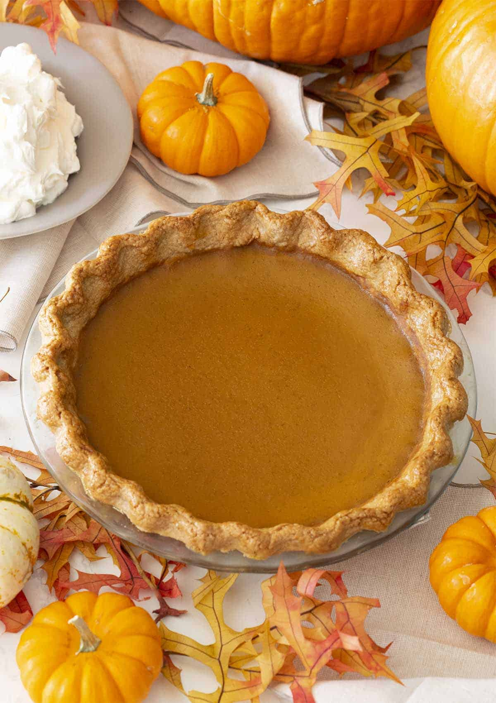

Pumpkin Pie Recipe

Description
The pumpkin pie recipe from Preppy Kitchen is definitely worth trying, and here are some reasons why:
- The recipe is easy to follow and includes step-by-step instructions with photos
- The pie crust is flaky and delicious, and the filling is smooth and spiced with cinnamon, ginger, nutmeg, and cloves
- The recipe uses canned pumpkin puree, which is convenient and easy to find, but you can also use homemade pumpkin puree if you prefer